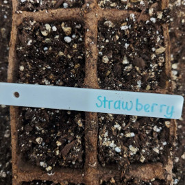

Sowing - 15 May 2022

5 AprSowing - 4 AprTable decoration - 19 MarProtected from fungus gnats - 11 MarPlanted by Olivia and Harrison: strawberry, Strawberry, and pumpkin seeds - 11 MarPlanted by Olivia and Harrison: strawberry, Strawberry, and pumpkin seeds - 11 MarLabeling - 11 Mar
Life
Strawberry 1: Mar-Apr 2022
Strawberry 2: Apr-May 2022
Strawberry 3: May-Jun 2022
Journal
Strawberry 1
11 Mar 2022: Harrison and Olivia spring 2022 gardening season start now. I picked strawberry, Strawberry, and pumpkin seeds for them. Olivia did prepare the tray for previous day's lemon basil seeds, but this one is prepared by me. The strawberry seeds are from McKenzie. Planted in Jiffy small pots with starter soil mixed with vermiculite.
25 Mar: Watered thoroughly in preparation of 10 days holiday.
3 Apr: Back from holiday, seedlings appears but dried out to death.
Strawberry 2
4 Apr: Replanted, 2x5 large jiffy pot.
May: Terminated, almost not growing
Strawberry 3
15 May 2022: Sow. McKenzie seeds. 5 small jiffies with starting mix.
1 June 2022: From 5 jiffy, only 1 sprouted (1 plant). only about 1 mm tall. Terminated because this is too slow and it's June already.